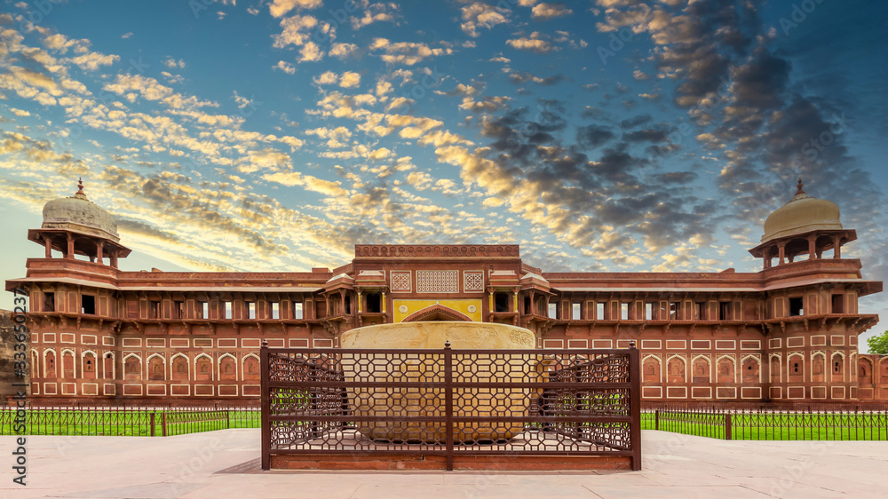
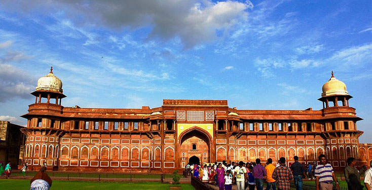

Jahangir Palace is the largest part of Agra Fort.
Emperor Akbar built the palace in the 16th century It is one of the top examples of Mughal Architecture
and was used mainly by the Rajput wives of Akbar.
What is the Jahangir Mahal in Fatehpur
Sikri?
Jahangir Palace (or Jahangiri Mahal) is a huge
red-sandstone palace built by the Mughal ruler Akbar. It was the living complex for the wives of Akbar.
It's an enormous palace. And it stands out from other popular monuments in Agra because of its
simplicity and integrity.


What are the features of Jahangir Mahal?
A prominent attraction of the Mahal is its enormous facade, whose lotus parapet, carved panels,
projecting balconies, brackets and marble lined niches make it greatly aesthetically pleasing. Another
notable characteristic is the interior elevations, which are predominantly Hindu but also incorporate
Islamic aspects.
Why is Jahangir Mahal famous?
Jahangiri Mahal may be the most noteworthy building
inside the Agra Fort of India. The Mahal was the principal zenana (palace for women belonging to the
royal household), and was used by the Rajput wives of Akbar. It is a form of Islamic architecture .